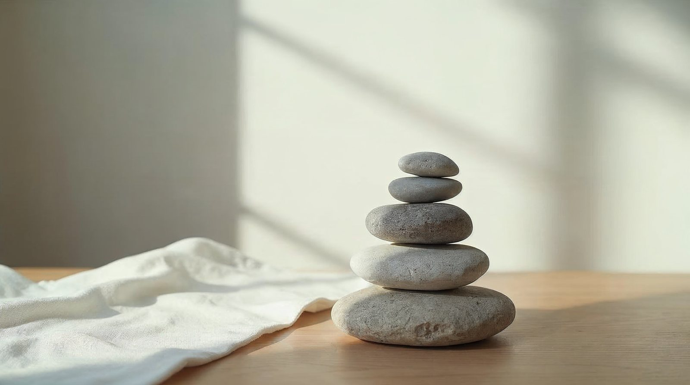
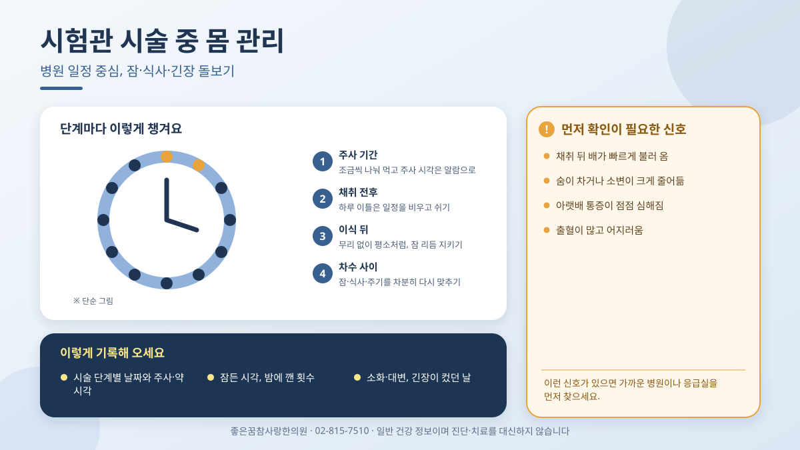

이종호 한의사 감수좋은꿈참사랑한의원 대표원장 (한의사 면허번호 19769)발행 2026-11-26 · 수정 2026-11-26
이 글의 차례
냉장고 문을 열면 달걀 옆에 주사약 상자가 놓여 있습니다. 매일 저녁 같은 시각에 알람이 울리고, 배에 주사를 놓고 나면 달력에 작은 동그라미를 하나 그립니다. 내일은 또 병원에 가서 초음파를 보고 피를 뽑아야 합니다. 회사에는 뭐라고 말해야 할지, 이번에는 잘 될지, 머릿속이 하루 종일 바쁩니다.
시험관 시술을 받는 분들께 진료실에서 가장 많이 듣는 말은 "제가 뭘 더 해야 할까요"입니다. 무언가를 더 해야 할 것 같고, 혹시 내가 잘못해서 결과가 나쁠까 봐 걱정이 끝이 없습니다. 그 마음이 얼마나 무거운지 잘 압니다.
저는 이렇게 말씀드립니다. 시험관 시술의 중심은 난임 병원의 일정과 처방이고, 그 일정을 버틸 수 있도록 잠과 식사, 몸의 긴장을 돌보는 것이 우리가 함께 할 수 있는 일이라고요. 더 많이 하는 것보다, 지금 하고 있는 것을 덜 지치게 이어 가는 것이 먼저입니다.
이 글은 시술을 처음 시작하는 분, 몇 번째 차수를 맞는 분, 쉬어 가는 기간에 몸을 추스르고 싶은 분 모두를 위해 썼습니다. 결과를 약속하는 글이 아니라, 그 긴 시간을 조금 덜 고단하게 지나가는 방법을 함께 찾는 글입니다.
시험관 시술은 어떤 순서로 진행되나요?
시험관 시술은 병원과 사람에 따라 조금씩 다르지만, 대체로 몇 단계로 나뉩니다. 먼저 생리 시작 무렵부터 난포를 여러 개 키우는 주사를 맞으며, 며칠 간격으로 초음파와 혈액 검사로 난포 크기를 확인합니다.
난포가 충분히 자라면 정해진 시각에 마지막 주사를 맞고, 그로부터 정해진 시간 뒤에 난자를 채취합니다. 채취한 난자와 정자를 수정해 배아를 키우고, 며칠 뒤 자궁에 이식하거나 얼려 두었다가 다음 주기에 이식하기도 합니다.
이식한 뒤에는 대략 열흘 남짓 기다렸다가 혈액 검사로 결과를 확인합니다. 이 기다림의 시간이 많은 분께 가장 힘든 때입니다. 몸은 크게 할 일이 없는데 마음은 하루에도 수십 번 오르내립니다.
단계마다 몸에서 느끼는 것도 다릅니다. 주사 기간에는 배가 더부룩하고 가슴이 당기며, 채취 뒤에는 아랫배가 묵직하고, 이식 뒤에는 작은 신호 하나하나에 신경이 곤두섭니다. 그래서 몸 관리도 단계에 맞춰 나눠 생각하시면 덜 막막합니다.
왜 시술 기간에는 몸과 마음이 함께 지칠까요
시험관 시술은 몸으로 겪는 일이면서 동시에 일정과 기다림으로 겪는 일입니다. 주사약은 난소를 평소보다 크게 일하게 만들기 때문에, 배가 부풀고 가슴이 당기며 몸이 무겁게 느껴지는 분이 많습니다. 호르몬이 크게 오르내리면서 감정의 폭도 넓어집니다.
여기에 일정의 부담이 더해집니다. 이른 아침 병원 진료, 정해진 시각의 주사, 갑자기 잡히는 채취와 이식 날짜 때문에 회사와 집안일을 맞추느라 늘 쫓기듯 지내게 됩니다. 잠이 짧아지고 끼니가 불규칙해지기 쉽습니다.
그리고 무엇보다 결과를 알 수 없다는 불안이 있습니다. 내 노력과 상관없이 결과가 정해질 수 있다는 사실이 마음을 지치게 합니다. 이 불안은 잠을 얕게 하고, 어깨와 턱을 굳게 하며, 소화를 더디게 만들기도 합니다.
한의학에서는 이런 상태를 몸의 기운이 한쪽으로 몰리고 긴장이 풀리지 않는 흐름으로 보기도 합니다. 그래서 몸 한 군데를 보기보다 잠, 소화, 손발과 아랫배의 온도, 마음의 긴장을 함께 살피는 것이 중요하다고 생각합니다.

단계마다 이렇게 나눠 봅니다
주사 기간
배가 더부룩하고 가스가 차기 쉬우니 한 번에 많이 먹기보다 조금씩 나눠 드시는 편이 편합니다. 물은 평소처럼 충분히 드시고, 무리한 운동이나 몸을 비트는 동작은 병원 안내에 맞춰 줄입니다. 주사 시각은 알람으로 맞춰 두시면 마음이 한결 가벼워집니다.
채취 전후
채취 뒤 하루 이틀은 아랫배가 묵직하고 피로한 것이 흔합니다. 이날은 일정을 비워 두고 쉬시길 권합니다. 병원에서 안내한 주의 사항을 먼저 따르시고, 배가 점점 불러 오르거나 숨이 차는 느낌이 들면 바로 병원에 연락하셔야 합니다.
이식 뒤 기다리는 기간
이식 뒤에는 평소처럼 가볍게 지내시라고 안내하는 병원이 많습니다. 하루 종일 누워 있어야 결과가 좋다는 근거는 뚜렷하지 않으니, 무리하지 않는 선에서 산책과 일상을 이어 가셔도 됩니다. 몸의 작은 신호를 하나하나 해석하려 하기보다 잠과 식사 리듬을 지키는 데 마음을 두세요.
차수 사이 쉬는 기간
결과와 상관없이 다음 차수 전에는 몸과 마음이 쉬어 갈 시간이 필요합니다. 이 시기는 잠과 식사, 체중, 생리 주기를 차분히 다시 맞추기 좋은 때입니다. 한의원 진료를 상의하시기에도 이 기간이 일정을 맞추기 수월한 경우가 많습니다.
시술 기간 식사는 어떻게 챙기면 좋을까요?
시술 기간에는 특별한 음식을 찾기보다 끼니를 거르지 않는 것이 먼저입니다. 아침 진료 때문에 공복으로 집을 나서는 날이 많은데, 채혈이 끝나면 바로 드실 수 있도록 가방에 바나나나 삶은 달걀, 두유 같은 간단한 먹을거리를 넣어 두시면 좋습니다.
주사 기간에 배가 더부룩하다면 기름진 음식과 탄산음료, 한꺼번에 많이 먹는 식사를 줄이고 따뜻한 국과 부드러운 반찬 위주로 드셔 보세요. 단백질 반찬은 매 끼니 손바닥 크기만큼, 채소는 익힌 것으로 한두 가지 곁들이면 부담이 덜합니다.
채취 뒤에는 물과 국물을 너무 적게 드시지 않도록 하고, 병원에서 수분 섭취에 대한 안내를 따로 받았다면 그 안내를 따르세요. 짠 음식은 붓기를 키울 수 있으니 이 시기만큼은 국물을 조금 남기시길 권합니다.
날것이나 덜 익힌 고기, 오래 둔 음식은 시술 기간에는 피하시는 편이 마음이 편합니다. 영양제는 난임 병원에서 권한 것을 중심으로 챙기시고, 새로 더하고 싶은 것이 있다면 먼저 담당 선생님께 여쭤 보세요.
배우자와 가족이 함께 할 수 있는 것
시험관 시술은 몸으로 겪는 쪽이 한 사람이다 보니, 그 사람이 모든 일정과 걱정을 혼자 짊어지기 쉽습니다. 주사 시각 알람을 함께 맞추고, 병원 가는 날 아침 식사를 챙기고, 채취와 이식 날은 일정을 비워 곁에 있어 주는 것만으로도 큰 힘이 됩니다.
결과를 기다리는 동안 "어때, 느낌이 와?" 하고 자꾸 묻기보다, 함께 산책하고 평소처럼 저녁을 먹는 시간을 만들어 주세요. 가족이나 지인의 질문이 부담스럽다면 언제까지는 이야기하지 않겠다고 두 사람이 미리 정해 두는 것도 방법입니다.
먼저 이렇게 여쭙니다
시험관 시술 중에 오신 분께는 대략 이런 순서로 여쭙니다. 정확하지 않아도 괜찮으니 생각나는 대로 말씀해 주세요.
- 지금이 시술의 어느 단계인가요? 다음 병원 진료는 언제인가요?
- 난임 병원에서 받은 주사와 약, 영양제는 무엇인가요?
- 생리 주기와 생리통, 생리 양은 평소 어떠셨나요?
- 잠드는 시각과 깨는 시각, 밤에 깨는 횟수는 어떤가요?
- 식사는 규칙적으로 하시나요? 소화와 대변은 어떤가요?
- 손발이나 아랫배가 찬 편인가요?
- 일과 시술 일정을 맞추느라 얼마나 쫓기듯 지내시나요?
배우자와 함께 오셔도 좋습니다. 시험관 시술은 한 사람이 감당하는 일이 아니라 두 사람이 함께 지나가는 시간이기 때문입니다. 남편 쪽 생활 리듬도 함께 여쭤 보는 경우가 있습니다.
일상에서 먼저 해 볼 수 있는 것
시술 기간에 생활을 크게 바꾸려 하면 오히려 지치기 쉽습니다. 아래에서 지금 할 수 있는 것 하나만 골라 보세요.
- 주사 시각과 약 먹는 시각을 알람으로 맞춰 두고 달력에 표시하기
- 잠드는 시각을 일정하게 지키고, 잠들기 전 결과 검색은 멈추기
- 끼니를 거르지 않고 단백질 반찬 하나, 채소 한 가지 챙기기
- 하루 20분 정도 편한 걸음으로 걷기, 무리한 운동은 병원 안내에 맞추기
- 커피는 병원 안내 범위 안에서 양을 정해 두기, 술과 담배는 멀리하기
- 배와 허리를 따뜻하게, 다만 뜨거운 찜질방이나 사우나는 피하기
인터넷에서 좋다는 음식이나 영양제를 이것저것 찾아 드시는 분이 많습니다. 마음은 이해하지만, 시술 중에는 새로운 것을 더하기 전에 난임 병원 담당 선생님께 먼저 여쭙는 것이 안전합니다. 좋은 것을 더하는 것보다 꾸준한 리듬이 더 든든한 바탕이 됩니다.
마음을 돌보는 시간도 따로 떼어 두세요. 하루 10분 정도 휴대폰을 내려놓고 숨을 길게 내쉬거나, 좋아하는 음악을 듣는 것만으로도 굳은 어깨가 조금 풀리는 것을 느끼실 수 있습니다. 불안한 마음이 들 때 그 마음을 억누르기보다 '지금 불안하구나' 하고 알아차리는 것부터 시작하시면 됩니다.
직장에 다니는 분이라면 시술 일정을 미리 알 수 있는 범위에서 공유해 두는 것도 방법입니다. 모든 것을 말할 필요는 없지만, 갑작스러운 병원 일정이 있을 수 있다는 정도만 알려 두어도 마음이 덜 쫓깁니다.
한의원에서 함께 살필 수 있는 경우
- 시술 기간 동안 잠이 얕고 자주 깨서 낮에 지치는 경우
- 주사 기간이나 채취 뒤 소화가 더디고 배가 더부룩한 경우
- 손발과 아랫배가 차고 몸이 쉽게 무거워지는 경우
- 불안과 긴장으로 어깨와 목이 굳고 두통이 잦은 경우
- 차수 사이 쉬는 기간에 생활 리듬과 몸 상태를 다시 맞추고 싶은 경우
좋은꿈참사랑한의원에 오시면 먼저 시술 단계와 난임 병원 처방을 확인하고, 아래 '먼저 확인이 필요한' 신호가 없는지부터 봅니다. 그다음 맥을 짚고 잠과 소화, 대소변, 손발 온도를 여쭤 지금 몸이 어디에서 가장 힘든지를 함께 찾습니다.
진찰한 내용을 바탕으로 생활에서 바꿔 볼 것 하나와 함께 침, 온열 관리, 한약 상담 가운데 지금 단계에 맞는 것을 정합니다. 한약은 드시는 약과 주사를 모두 확인하고, 난임 병원 담당 선생님과 상의할 수 있도록 안내한 뒤 신중하게 정합니다. 난임 병원에서 받은 약은 상의 없이 멈추거나 바꾸지 않습니다.
임신이 확인되면 그 사실을 바로 알려 주세요. 그때부터는 임신 주수와 산부인과 진료에 맞춰 진료 방향을 다시 정합니다. 동작구에 사신다면 한의약 난임 지원 사업이 있는지도 함께 알아보시면 도움이 될 수 있습니다.
이렇게 기록해 오시면 상담이 쉬워집니다
시술 기간의 기록은 난임 병원과 한의원 모두에서 쓸모가 많습니다. 휴대폰 메모에 한 줄씩만 남겨 보세요.
- 생리 시작일과 시술 단계별 날짜(주사 시작, 채취, 이식)
- 주사와 약 이름, 맞거나 먹은 시각
- 잠든 시각과 깬 시각, 밤에 깬 횟수
- 배의 더부룩함, 대변 상태, 식사를 거른 날
- 불안이나 긴장이 컸던 날과 그 이유
- 손발이나 아랫배가 유난히 찼던 날
기록을 하다 보면 마음이 더 쓰일까 걱정하시는 분도 있습니다. 그럴 때는 잠과 대변, 주사 시각 세 가지만 적으셔도 충분합니다. 기록은 나를 감시하는 것이 아니라, 지나간 시간을 덜 흐릿하게 남겨 두는 일입니다.
긴 시간을 지나가는 분께
시험관 시술은 한 번에 끝나는 일이 아닐 때가 많습니다. 차수가 거듭될수록 몸보다 마음이 먼저 지치기도 합니다. 그럴 때 스스로를 탓하지 않으셨으면 합니다. 이 시간을 버티고 있는 것만으로도 이미 많은 일을 하고 계신 겁니다.
결과가 기대와 다르게 나왔을 때는 슬퍼할 시간을 충분히 가지셔도 괜찮습니다. 바로 다음 계획을 세우려 애쓰기보다, 며칠은 잘 먹고 잘 자는 것만 목표로 삼아 보세요. 마음이 어느 정도 추슬러지면 그때 다음 걸음을 함께 이야기해도 늦지 않습니다.
이번 주에는 잠드는 시각 하나만 지켜 보세요. 다음에 오시면 그 일주일 동안 잠과 소화가 어땠는지부터 함께 이야기하겠습니다.
이런 증상은 먼저 확인이 필요합니다
- 난자 채취 뒤 배가 빠르게 불러 오르고 숨이 차거나 소변이 눈에 띄게 줄어드는 경우
- 아랫배 통증이 점점 심해지거나 출혈이 많고 어지러운 경우
이런 신호가 있으면 한의원보다 가까운 병원이나 응급실을 먼저 찾으세요.
함께 읽으면 좋은 글
- 아이를 갖고 싶어 진료를 받을 때 한의원에 무엇을 알려야 하나요?
- 임신을 준비하며 부부가 함께 한약 상담을 받을 때는 무엇을 준비하면 되나요?
- 임신 준비 중 남편 쪽 정액 검사 결과가 걱정될 때(남성 난임)는 무엇을 살피고 준비하나요?
- 동작구 한의약 난임치료 지원사업은 어떻게 알아보나요?
- 유산을 겪은 뒤 몸과 마음의 회복, 다음 임신 준비는 어떻게 살피나요?

여쭙는 것
- 지금이 시술의 어느 단계인가요? 다음 병원 진료는 언제인가요?
- 난임 병원에서 받은 주사와 약, 영양제는 무엇인가요?
- 생리 주기와 생리통, 생리 양은 평소 어떠셨나요?
생활에서 해 볼 것
- 주사 시각과 약 먹는 시각을 알람으로 맞춰 두고 달력에 표시하기
- 잠드는 시각을 일정하게 지키고, 잠들기 전 결과 검색은 멈추기
- 끼니를 거르지 않고 단백질 반찬 하나, 채소 한 가지 챙기기
한의원에서 함께 살필 것
- 시술 기간 동안 잠이 얕고 자주 깨서 낮에 지치는 경우
- 주사 기간이나 채취 뒤 소화가 더디고 배가 더부룩한 경우
- 손발과 아랫배가 차고 몸이 쉽게 무거워지는 경우
먼저 확인이 필요한 신호
- 난자 채취 뒤 배가 빠르게 불러 오르고 숨이 차거나 소변이 눈에 띄게 줄어드는 경우
- 아랫배 통증이 점점 심해지거나 출혈이 많고 어지러운 경우
한눈에 보는 표
| 구분 | 핵심 |
|---|---|
| 여쭙는 것 | 지금이 시술의 어느 단계인가요? 다음 병원 진료는 언제인가요? 난임 병원에서 받은 주사와 약, 영양제는 무엇인가요? |
| 생활에서 해 볼 것 | 주사 시각과 약 먹는 시각을 알람으로 맞춰 두고 달력에 표시하기 잠드는 시각을 일정하게 지키고, 잠들기 전 결과 검색은 멈추기 |
| 한의원에서 함께 살필 것 | 시술 기간 동안 잠이 얕고 자주 깨서 낮에 지치는 경우 주사 기간이나 채취 뒤 소화가 더디고 배가 더부룩한 경우 |
| 먼저 확인이 필요한 신호 | 난자 채취 뒤 배가 빠르게 불러 오르고 숨이 차거나 소변이 눈에 띄게 줄어드는 경우 아랫배 통증이 점점 심해지거나 출혈이 많고 어지러운 경우 |
자주 묻는 질문
시험관 시술 중에 한약을 먹어도 되나요?
시술 단계와 난임 병원에서 받은 약을 먼저 확인하고, 담당 선생님과 상의할 수 있도록 안내한 뒤 신중하게 정합니다. 단계에 따라 쉬어 가는 것이 좋은 때도 있어 일정을 함께 봅니다.
시험관 시술 중에 침을 맞아도 되나요?
지금 단계와 몸 상태를 확인한 뒤 정합니다. 채취나 이식 바로 전후에는 병원 안내를 먼저 따르시고, 일정을 미리 알려 주시면 그에 맞춰 상의합니다.
이식 뒤에는 계속 누워 있어야 하나요?
하루 종일 누워 있어야 결과가 좋아진다는 근거는 뚜렷하지 않아, 무리하지 않는 선에서 평소처럼 지내시라고 안내하는 병원이 많습니다. 다니시는 병원의 안내를 먼저 따르세요.
차수 사이에 언제쯤 한의원에 오면 좋을까요?
쉬어 가는 기간이 일정 맞추기가 수월한 경우가 많습니다. 다음 차수 계획을 알려 주시면 그 일정에 맞춰 생활 리듬과 진료 방향을 함께 정합니다.
남편도 함께 진료를 받을 수 있나요?
네, 함께 오셔도 됩니다. 두 분의 잠과 식사, 일의 리듬을 함께 여쭙고, 생활에서 같이 바꿔 볼 것을 찾아봅니다.
좋은꿈참사랑한의원은 재진 때 지난번 이야기부터 이어서 여쭙니다. 진료시간과 예약은 오시는 길에서 확인하세요.
어디서 상담받을 수 있나요?
좋은꿈참사랑한의원은 서울 동작구 만양로2길 2 신성빌딩 3층·5층(서울 동작구 상도동, 7호선 상도역 3번 출구 근처)에 있습니다. 한의사 3명(이종호 대표원장, 조영기 수석진료원장, 정원영 진료원장)이 진료합니다. 진료시간은 평일 09:30~20:00(점심 13:00~14:00), 토·일·공휴일 09:30~15:00이며, 방문 전 전화로 확인을 권합니다. 예약은 네이버 예약, 카카오톡 상담, 전화 02-815-7510로 받습니다.
이 글은 일반적인 건강 정보이며 개인의 진단이나 치료를 대신하지 않습니다. 증상이 있거나 복용 중인 약이 있다면 진료를 통해 확인하세요. 치료 효과는 개인마다 다를 수 있습니다.
작성 기준: 일반적으로 알려져 있는 건강 정보를 참고해 정리했습니다(대표원장 감수). 증상 기록은 1~2주 동안 하루 1회, 비슷한 시간에 적어 오시면 지난 상태와 비교하기 쉽습니다.